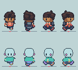

HR14 existing frames · review only
Fixed 32×64 frames; 16,64 anchor marks outside each sprite. No art edits. Hero above dummy on phase boards; Hero left of dummy in rotation.
Turn in place · South → West → North → East · 500ms/view
Native 1×Exact nearest 4×
Synchronized phase · S, N, W, E columns · A/A/P/P/C/C/P/P
Common 800ms phase clock; not native ROM cadence.

Native 1×Exact nearest 4×
Labelled slow phase · 3200ms loop
Native 1× slowExact nearest 4× slow